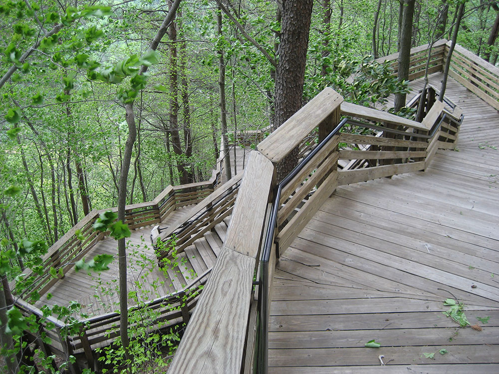
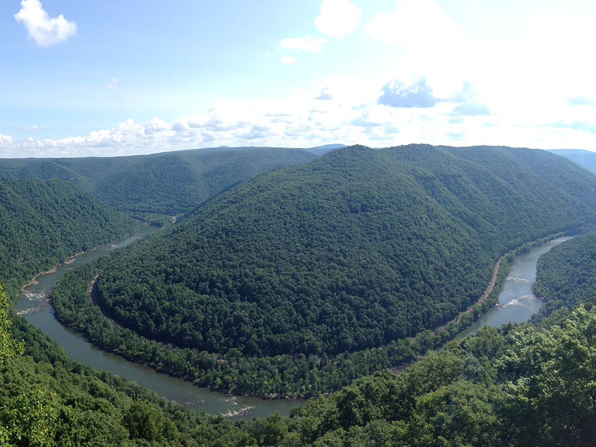
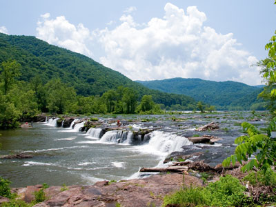
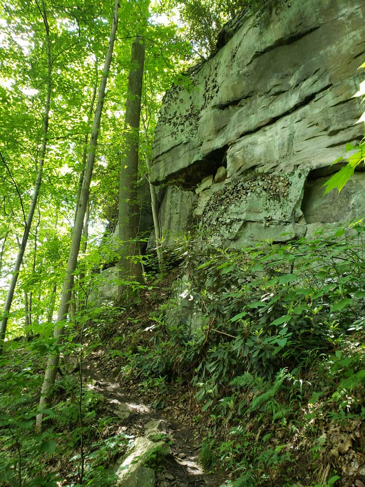

The newest National Park designed to protect and maintain the New River Gorge in southern West Virginia in the Appalachian Mountains
General Information
Canyon Rim Visitor Center is open daily (except Thanksgiving, Christmas, and New Year's) from 9:00 AM to 5:00 PM
Sandstone Visitor Center is open daily from 9:00 AM to 5:00 PM from May through November. From December through April, Sandstone Visitor Center will be on limited winter hours. Winter 2019-2020 Hours: Sandstone Visitor Center will be closed from December 9. 2019 through May 2020.
Thurmond Depot Visitor Center is open seasonally June through August from 10:00 AM to 5pm
Grandview Visitor Center is open seasonally Memorial Day through Labor Day from 12:00 Noon to 5:00 PM.
How to Get There
From Charleston, WV (59mi) Get on I-64 E/I-77 S from Lee St E and Brooks St. Follow I-64 E/I-77 S to WV-612 E in Scarbro. Take exit 60 from I-64 E/I-77 S. Follow WV-612 E to US-19 N in New Haven.
Overview
New River Gorge National Park and Preserve in southern West Virginia protects a deep, rugged canyon cut by the New River, one of the oldest rivers on the continent, and its steep forested slopes, rock cliffs, and rapids. The New River Gorge Bridge, a 3,030-foot steel arch that rises 876 feet above the river, is one of the longest steel arch bridges in the Western Hemisphere and a symbol of the park. The gorge is also known for its whitewater rafting, rock climbing, and the history of coal mining and railroads that built the area's towns, some of them now ghost towns.
The area was protected as the New River Gorge National River in 1978 and became America's 63rd national park and preserve in December 2020, the newest in the system. The park covers about 72,000 acres, of which most is the preserve, where hunting is allowed. People visit to see the bridge, raft the New and Gauley Rivers, climb on sandstone cliffs, hike to overlooks, and explore the old coal towns. Bridge Day, held on the third Saturday of October, is a festival when the bridge is closed to traffic and BASE jumpers parachute from it.
Park Sections
The park stretches for about 53 miles along the New River. In the north, the Canyon Rim area at the New River Gorge Bridge has the main visitor center and overlooks, with the bridge and Bridge Walk. Nearby, Fayette Station Road descends to the river, and the Long Point and Endless Wall trails are close. In the middle, Grandview has a rim and overlooks, and Thurmond is a historic railroad town. In the south, Sandstone Falls and the Sandstone Visitor Center near Hinton offer a boardwalk and a view of the river's largest falls. The areas are linked by roads along the gorge.
Sightseeing and Exploring the Park
The best view of the bridge is from the New River Gorge Bridge Overlook at the Canyon Rim Visitor Center, with boardwalks and an overlook of the bridge. Fayette Station Road, a one-lane road that winds down to the river and under the bridge, is a short scenic drive. Grandview is known for a view of the river's horseshoe bend, and many say it is the most beautiful spot in the park. The historic town of Thurmond, a former coal and rail center, is preserved by the park, with a depot and a ghost-town feeling.
Hiking
The park has more than 100 miles of trails. The Endless Wall Trail (about 2.4 miles round trip) is the most popular, with views of cliffs and the river from the rim. The Long Point Trail (3.2 miles round trip) leads to a view of the bridge and gorge. The Castle Rock Trail and Bridge Buttress Trail offer shorter walks. The Kaymoor Miners Trail descends over 800 steps to an abandoned mining town, and the Kaymoor Trail follows an old route. Dunloup Falls is a short walk to a waterfall. Trails near the rim can be steep and rocky.
Other Activities
The park is internationally known for whitewater rafting, with outfitters offering trips on the lower New River, which has big rapids, and the upper New, which is gentler, as well as the Gauley River, a fall destination with some of the best whitewater in the East. The gorge also has some of the East's best rock climbing, with more than 1,400 routes, and mountain biking, fishing, and kayaking. The Bridge Walk is a guided tour on the catwalk beneath the bridge deck, 25 stories above the river. Ziplines and ranger programs are also available.
Flora and Wildlife
The gorge is one of the most biologically diverse areas of the Appalachians, with hardwood forests of oak, hickory, maple, and tulip poplar, thick rhododendron and mountain laurel, and wildflowers in spring. Wildlife includes black bears, white-tailed deer, bobcats, river otters, wild turkeys, and many birds such as peregrine falcons, bald eagles, and warblers. The river supports smallmouth bass, muskellunge, and catfish. Rhododendron blooms in June and July, and fall color is excellent in October. Viewing is on your own, and early morning is best along the rim trails.
Access
The park is in Fayette, Raleigh, and Summers Counties, about an hour (60 miles) south of Charleston, West Virginia, via I-64 and US-19 near Fayetteville and Oak Hill. Beckley is about 20 minutes south of Canyon Rim. The nearest commercial airports are Raleigh County Memorial Airport in Beckley and Yeager Airport in Charleston, with larger airports in Charlotte, Washington, D.C., and Pittsburgh, each about 4 to 5 hours away. There is no public transportation. Most visitors arrive by car and need one to move between the park's areas.
Seasons
Summer is the busiest season for rafting, with warm weather and long days, and spring has high water and blooming rhododendron. Fall brings color to the forest, the Gauley River dam releases in September and October for world-class whitewater, and Bridge Day in October. Winter is cold and quiet, with snow or ice sometimes affecting trails and roads, but the bare trees open up views of the river and cliffs. Some services close in winter, and rafting is mostly closed from late fall through early spring. Check the National Park Service website for conditions.
Camping and Lodging
The park offers primitive campgrounds, including Grandview Sandbar, Army Camp, Glade Creek, and Stone Cliff, and backcountry camping is allowed in some areas, mostly on a first-come basis. There is no lodging in the park. Fayetteville, near the bridge, has inns, B&Bs, cabins, and restaurants, and Oak Hill and Beckley, about 20 minutes away, have chain hotels. Adventure outfitters such as Adventures on the Gorge and ACE Adventure Resort have cabins, tents, and lodging, and Babcock State Park has cabins and camping within a short drive.
Visitor Centers
The park has several visitor centers. The Canyon Rim Visitor Center, at the New River Gorge Bridge near Lansing, is the main one, with exhibits, a film, a bookstore, and overlooks. The Sandstone Visitor Center in the south, near Hinton, has exhibits on the river and history. The Grandview Visitor Center is open seasonally, and the Thurmond Depot Visitor Center has exhibits on the railroad town in season. Hours vary by season, so check the National Park Service website.
This article uses material from the Wikipedia article "New River Gorge National Park and Preserve", which is released under the Creative Commons Attribution-Share-Alike License 3.0. Additional information comes from the National Park Service New River Gorge National Park and Preserve website.
Featured Locations and Trails
Bridge Buttress Trail
Short hiking path that descends through forested terrain to scenic viewpoints beneath a massive steel arch bridge spanning a deep river gorge.

Shadle, CC BY-SA 3.0, via Wikimedia Commons; Image Size Adjusted

Bridge Walk
Guided walking tour along a catwalk beneath a steel arch bridge 850 feet above the New River Gorge.
Castle Rock Trail
Short but rugged loop trail featuring towering sandstone cliffs, uneven rock steps, and dramatic overlooks of a deep river gorge.

Dunloup Falls
Roadside waterfall cascading over a wide sandstone ledge with easy pull-off access and minimal walking required for close-up views.
Endless Wall Trail
Scenic forest trail following towering sandstone cliffs with multiple overlooks offering expansive views of a deep river gorge nearly 1,000 feet below.
Fayette Station Road
Historic one-way scenic drive descending steep switchbacks to a river crossing before climbing back up the gorge with sweeping views of cliffs, forests, and a towering steel bridge.

Aparkswv, CC BY-SA 4.0, via Wikimedia Commons; Image Size Adjusted

Grandview
Clifftop park area featuring sweeping overlooks 1,400 feet above a winding river with expansive views of forested gorge landscapes.
Kaymoor Miners Trail
Steep and strenuous trail descending historic mine routes to the river with long staircases, rugged terrain, and sweeping gorge views.
Kaymoor Trail
Long forested trail following the mid-slope of a deep gorge with historic coal mining remnants and occasional river views along an old roadbed.
Long Point Trail
Short forested trail leading to a dramatic rock outcrop with panoramic views of a sweeping river gorge and a towering steel arch bridge.
New River Gorge Bridge
Massive steel arch bridge soaring high above a deep river canyon, spanning one of the most dramatic landscapes in the Appalachian region.
New River Gorge Bridge Overlook
Easily accessible overlook offering close-up views of a massive steel arch bridge spanning a deep river gorge framed by forested cliffs.

John Mueller, CC BY 2.0, via Wikimedia Commons; Image Size Adjusted
.jpg){kind=link}
Sandstone Falls
Wide multi-tiered waterfall cascading across a broad riverbed, creating a series of scenic rapids and rocky shelves surrounded by forest.

